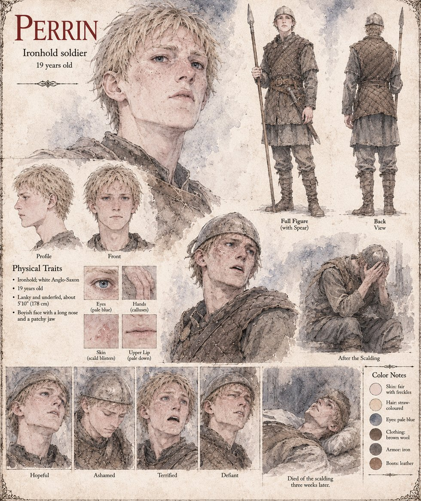

Perrin
Ironhold soldier · 19 by his sheet
An Ironhold levy soldier, “a boy not yet twenty.” Before the levies took him he delivered bread for his family’s ovens in Ironhold’s capital. In Chapter Ten he is one of two soldiers scalded at Costa’s doorway, the other being the Second Scalded Soldier, and he dies of the scalding three weeks later. The notes say he carries the smell of baking in his clothes from home.
The bible gives only his age, as “a boy not yet twenty”; the rest of his look is invented. The sheet makes him nineteen, lanky and underfed at about 5'10", with a boyish face, a long nose, a patchy jaw and thin pale down on the upper lip, straw-coloured hair cropped short, pale blue eyes that are scared and proud, and fair skin freckled across the nose. He wears a quilted levy jerkin over a wool tunic, a plain iron cap and leather boots, and carries a short spear and a dagger. A close-up shows the scald blisters on his skin, and the panels show him after the scalding with his head in his hands and, three weeks on, lying in a sickbed.